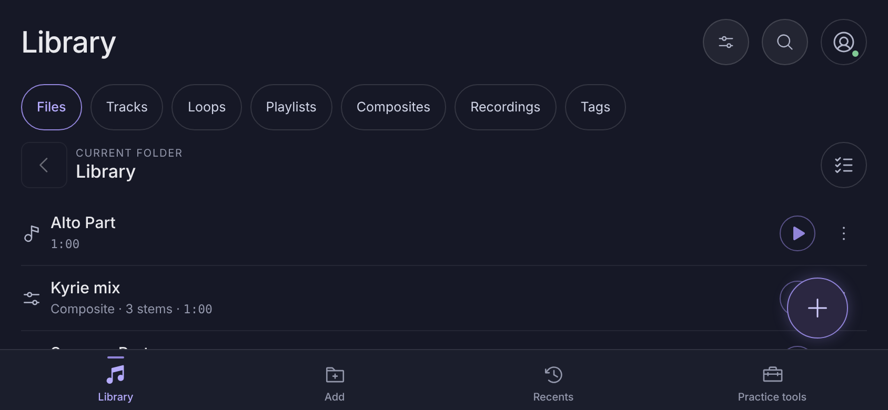
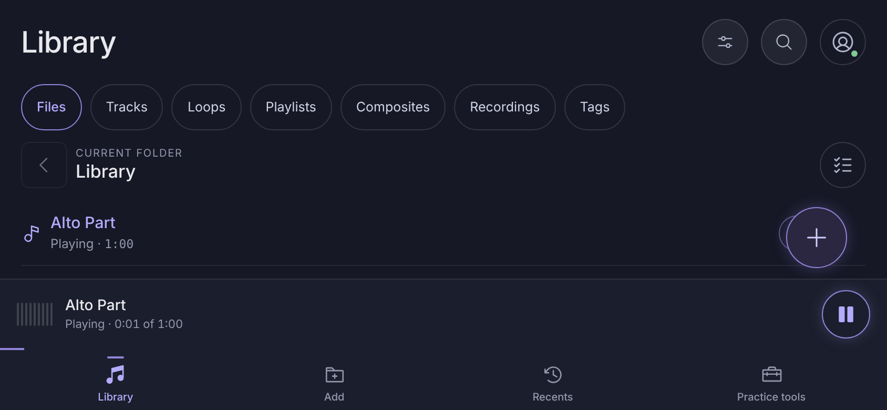
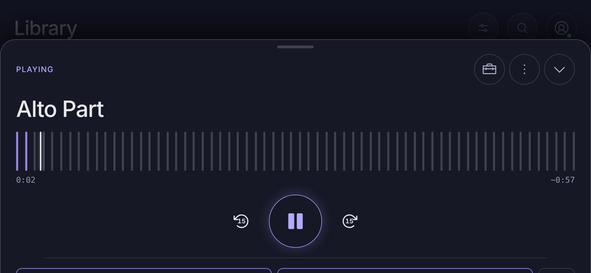
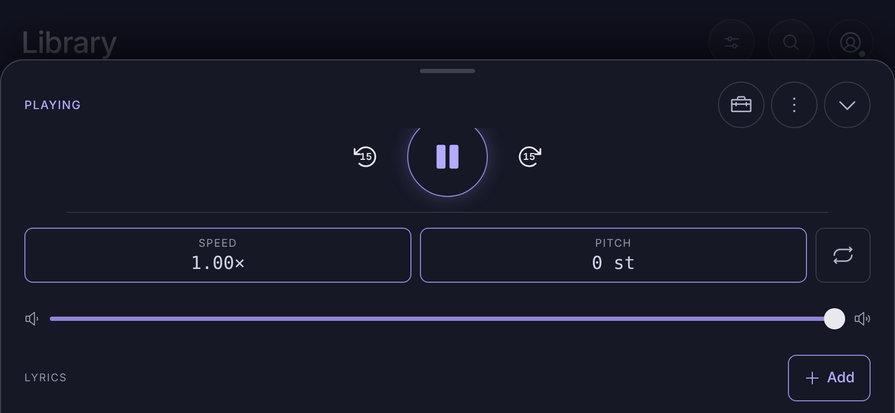
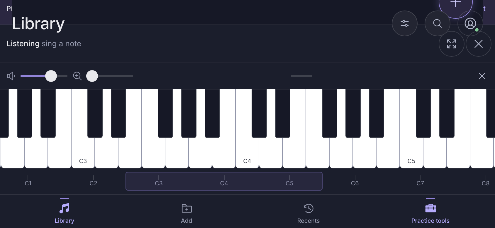
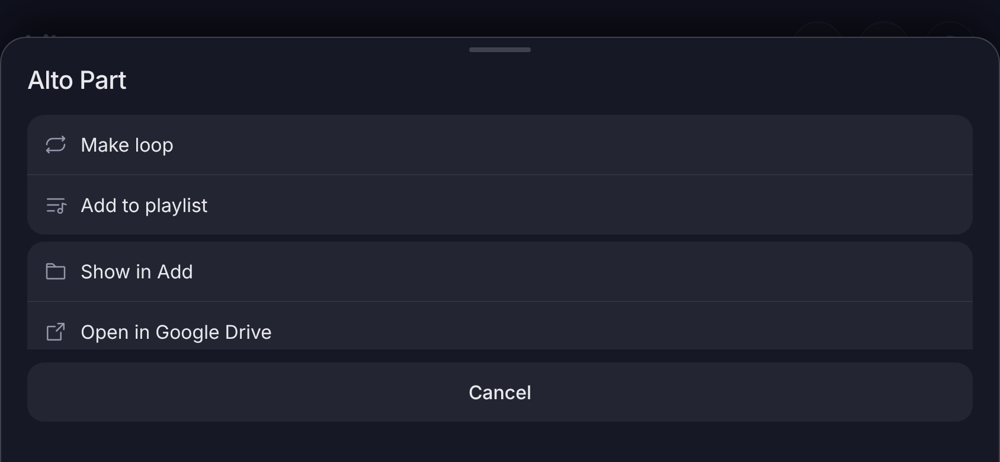
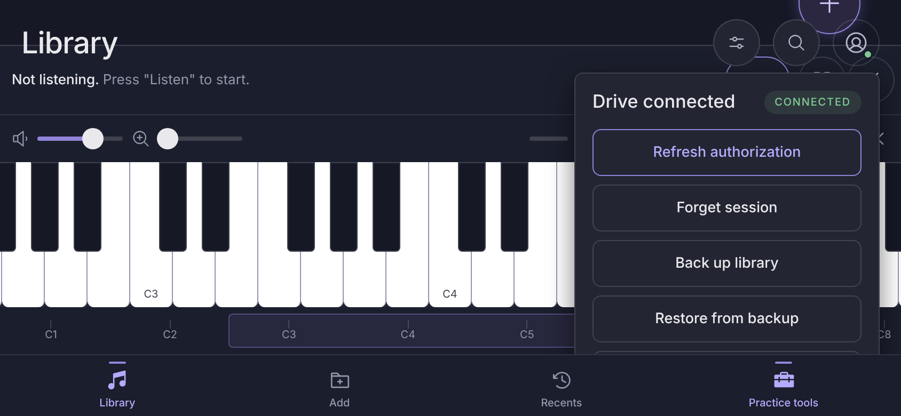
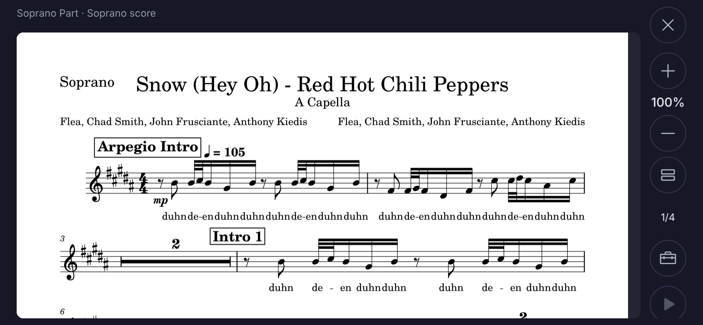

Mock for issue #46. All frames are an iPhone on its side, 844 × 390
points, notch on the left, Nocturne colours. Section 0 is captured from
the real app by the browser tests; sections 1 to 7 are the proposed
arrangement for each surface. Design reference, not shipped code.
0. Captured from the app today
Real screenshots from the browser-test export at 844 × 390 (Chromium, mock
library, touch off). They show what needs to change; the generator is
tools/browser-session/capture-landscape-views.ts.

Library: the mini-player and tab bar take a third of the height; the
add button sits on the row actions; about 1.5 rows show.

Playing: Alto Part, the mini-player and tabs leave one row of content.

Playback sheet: the portrait stack. Waveform and transport fill the
first screen.

Speed, pitch, loop, volume and lyrics are below the fold and the queue
button is out of reach without scrolling.

Pitch strip and piano together: the header and add button paint over
the strip and no content is left.

Overflow sheet: clipped at the third item; the list scrolls inside a
short window.

Account menu over the piano: clipped by the bottom of the screen.

Sheet music viewer: already full height with a trailing control column
(close, zoom, page, tools, play). It stays as it is.
1. Library with the rail
The rail has four entries: Library, Add, Recents and Practice tools (which
opens the tools menu, as the tab does today). The add button moves into
the header as + so it never covers a row; the chip row scrolls
sideways.
Library
≡⌕＋◉
FilesTracksLoopsPlaylistsCompositesRecordingsTags
Ubi caritasSopranos · 3:12
Locus isteFull choir · 2:48
Cantate DominoAltos · 4:05
Nunc dimittisBasses · 3:40
Nothing playing: the pane is hidden and the list uses the full width.
Library
≡⌕＋◉
FilesTracksLoopsPlaylists
Ubi caritasSopranos · 3:12
Locus isteFull choir · 2:48
Cantate DominoAltos · 4:05
Nunc dimittisBasses · 3:40
Playing: the Now Playing pane sits beside the list (280 points), the
list keeps about 4 rows.
2. Recents and Add
Both are single-column text and lists today; in landscape they keep one
column but cap line length and put the Drive tabs in the header row.
Recents
◉
Recent rehearsal entry points
Ubi caritasSopranos · 3:12
Locus isteFull choir · 2:48
Cantate DominoAltos · 4:05
Popular tags
SopranoEasterAdvent
Recents: entry points and tags side by side when there is room.
Add
My DriveShared with you⟳⌕◉
RehearsalFolder
Easter 2026Folder
Add: the My Drive and Shared with you tabs join the header row.
3. Full playback view
Controls on the left (waveform, transport, speed, pitch, loop, volume) and
one surface on the right; Lyrics, Queue and Shaping are tabs, so nothing
is below the fold.
PLAYING🧰⋮⌄
Ubi caritas
↺15❚❚↻15
Speed 1.00×Pitch 0 st⟲ Loop
LyricsQueueShaping
Kyrie eleison Christe eleison Kyrie eleison Gloria in excelsis Deo
Lyrics tab: the lyrics scroll on the right while the controls stay
put.
PLAYING
Ubi caritas
↺15❚❚↻15
Speed 1.00×Pitch 0 st
LyricsQueueShaping
Ubi caritasSopranos · 3:12
Locus isteFull choir · 2:48
Cantate DominoAltos · 4:05
Nunc dimittisBasses · 3:40
Queue tab: reorder and play from the right column; the transport stays
on the left.
4. Menus and sheets become side sheets
Bottom sheets (track menu, add to playlist, account, queue actions) open
as a trailing side sheet up to 380 points wide, full height, scrolling
inside, with a scrim. Nothing is clipped by a short window.
Library
Ubi caritasSopranos · 3:12
Locus isteFull choir · 2:48
Cantate DominoAltos · 4:05
Alto Part
⟲ Make loop
☰ Add to playlist
▭ Show in Add
↗ Open in Google Drive
✎ Rename
♪ Sheet music
Track menu: every action reachable by scrolling the side sheet.
Library
◉
Ubi caritasSopranos · 3:12
Locus isteFull choir · 2:48
Cantate DominoAltos · 4:05
Drive connected CONNECTED
Refresh authorization
Forget session
Back up library
Restore from backup
Settings
Account menu: same side sheet, above any open practice tool.
5. Practice tools
Pitch and Recording open in the trailing panel (replacing the Now Playing
pane while open). The piano keeps its full-width keyboard but at a compact
height (104 points) with its controls in a 34-point bar, docked at the
bottom of the content area to the right of the rail, so it never covers
the header or the add button.
Library
＋
Ubi caritasSopranos · 3:12
Locus isteFull choir · 2:48
Cantate DominoAltos · 4:05
Pitch monitor in the trailing panel.
Library
＋
Ubi caritasSopranos · 3:12
Locus isteFull choir · 2:48
🔈 ▬▬ 🔍 ▬▬ ⤢ ✕
Piano: a compact keyboard at the bottom; the Now Playing pane stays
because the keyboard is not a trailing panel.
Library
＋
Ubi caritasSopranos · 3:12
🔈 ▬▬ 🔍 ▬▬ ⤢ ✕
All three: pitch and recording share the trailing panel, the piano
sits below the content; the list still shows a row.
5b. Piano full screen
In the wide-short layout the piano has a Full screen option (⤢ in
the piano bar, next to Close). Full screen hides the rail, the Now Playing
pane and the content: the keyboard fills the window height, with a slim
40-point bar for volume, zoom, the sung-note readout,
Exit full screen (⤡) and Close. The keys keep their sung-note
highlight and the pitch arrow. The choice is remembered on the device and
the piano reopens the same way. Playback keeps running; a floating chip
shows the playing title and a pause button.
🔈 ▬▬▬🔍 ▬▬▬C♯4 · 17 cents flat⤡✕
C3C4C5
Full screen: the bar at the top, the keyboard at the full remaining
height (about 350 points of key).
C3C4C5
⏸ Ubi caritas · 0:42
⤡
Immersive variant, bar hidden after a few seconds of no touch: only a
small ⤡ and a playing chip remain; a tap shows the bar again.
6. Sheet music, lyrics and composites
Viewers take the full window height. Sheet music gets a thin control
column on the trailing side (pages, part chips, go to page); the composite
Mix panel becomes a stem list beside the transport.
Soprano score
Page 1 of 4
◀▶
Go to page
Part: Soprano
Pitch marks
✕
Sheet music: the page uses the full height; the control column
collapses to icons on tap.
PLAYING · Kyrie mix
↺15❚❚↻15
1.00×0 st
MixLyricsQueue
Soprano (me)M S
AltoM S
TenorM S
All parts ▾Save as preset
Composite: Mix is another tab in the right column; every stem row is
visible at once.
7. Layout classes
Class
Window
Navigation
Playback
Sheets and menus
compact
width < 600
Bottom tabs
Mini-player band
Bottom sheets
wide-short
width ≥ 600 and height < 500
Side rail (4 entries)
Now Playing pane
Trailing side sheets
A 40-point band around each threshold prevents flipping when the keyboard
or browser chrome resizes the window.